Nakatosa, Kochi: things to do, food and stays
Nakatosa · Kochi
Nakatosa
Highlighted on the Kochi map.
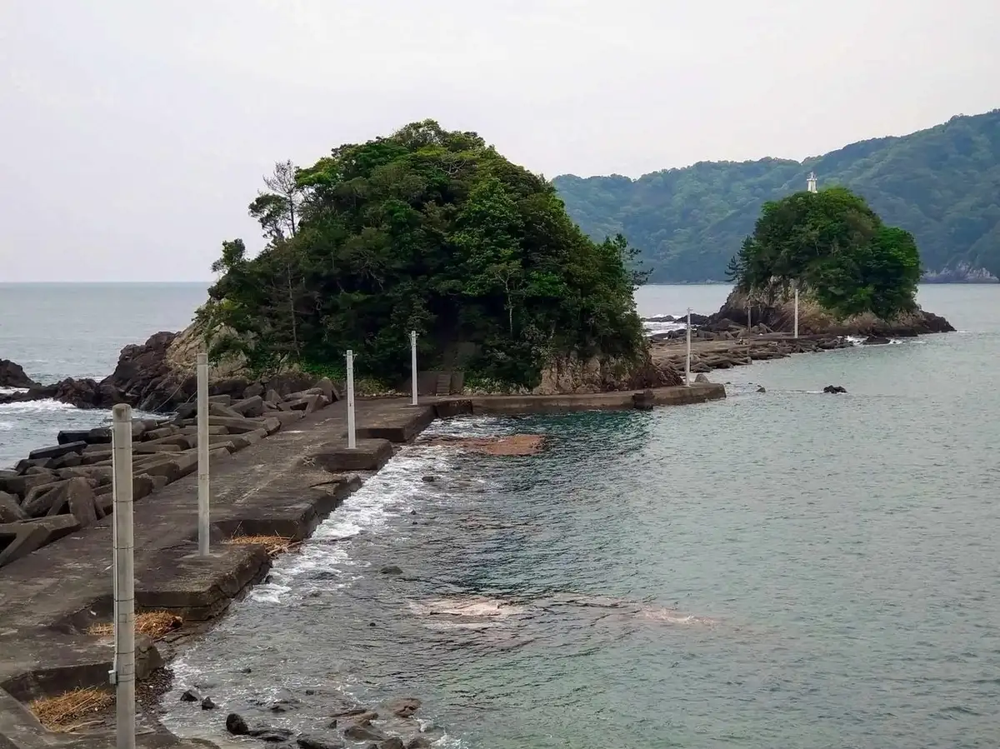
Stay
鰹乃國の湯宿 黒潮本陣
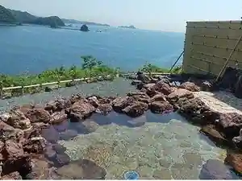
Katsuo No Kuni No Yuyado Kuroshio Honjin
四万十源流の里
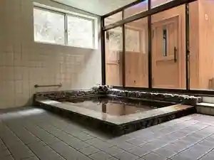
Shimanto Genryu No Sato
Dining
田中鮮魚店
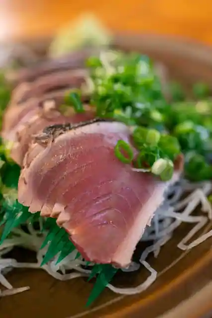
Tanaka Sengyo
黒潮本陣
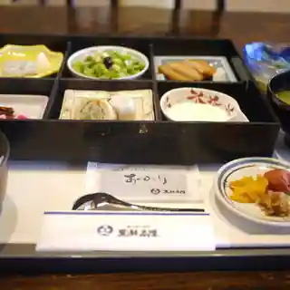
Kuroshio Honjin
山本鮮魚店
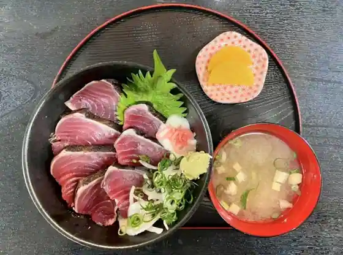
Yamamoto Sengyo
市場のめし屋 浜ちゃん
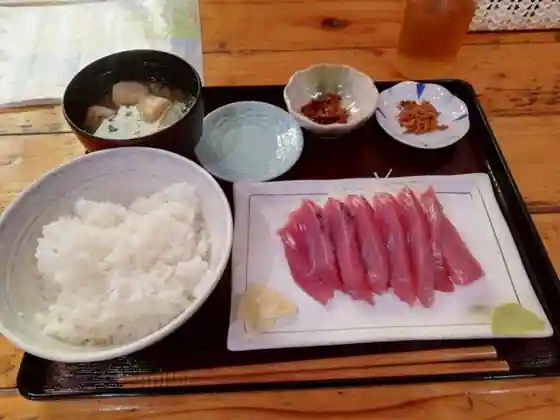
Shijo Nomeshi Ya Hama Chan
高知屋
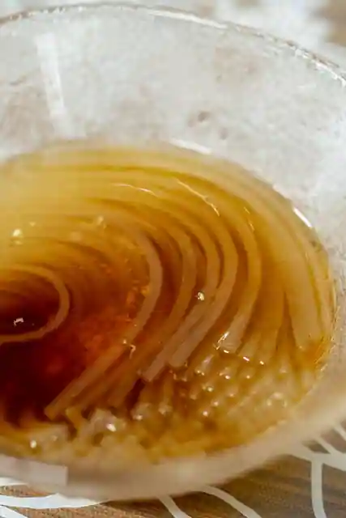
Kochi Ya
黒潮工房
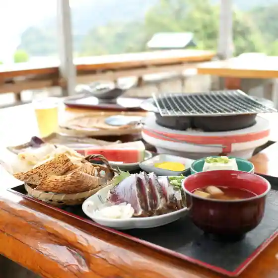
Kuroshio Kobo
風工房
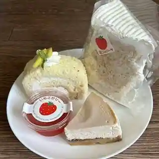
Kaze Kobo
浜焼き 海王
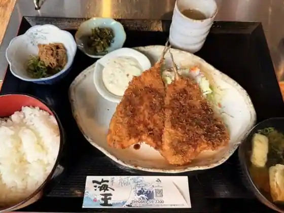
Hamayaki Ki Kaio
とみぃの台所
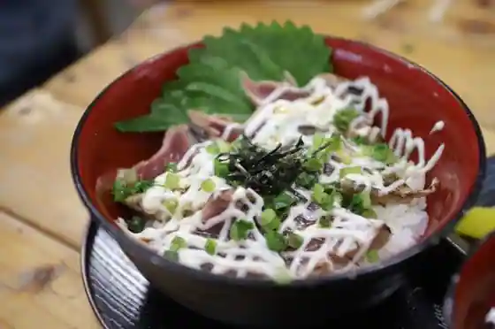
Tomino Daidokoro
西村甘泉堂
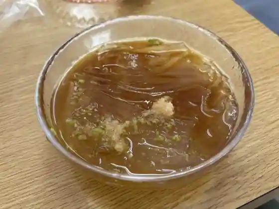
Nishimura Kansen Do
岩本こむぎ店
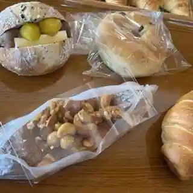
Iwamoto Komugi
岡村かまぼこ店
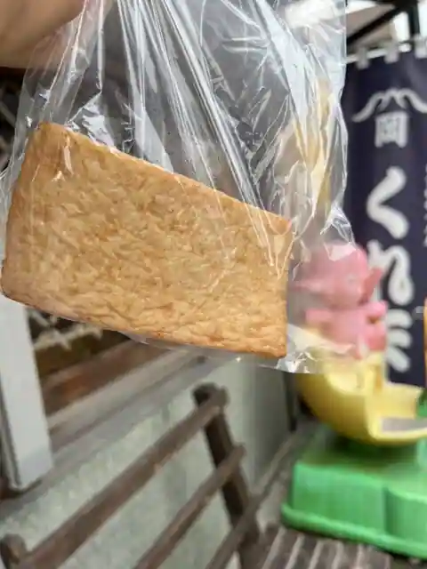
Okamura Kamaboko
浜岡惣菜店
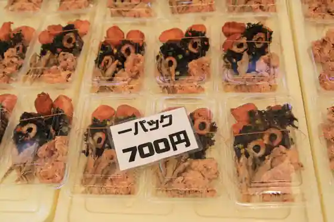
Hamaoka Sozai
道の駅 なかとさ
Michi No Eki Nakatosa
茶房 古久家
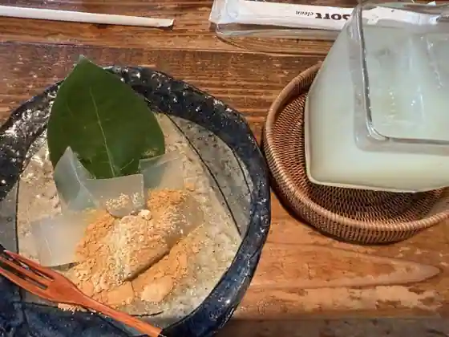
Sabo Kokyu Ie
串焼き ポン吉
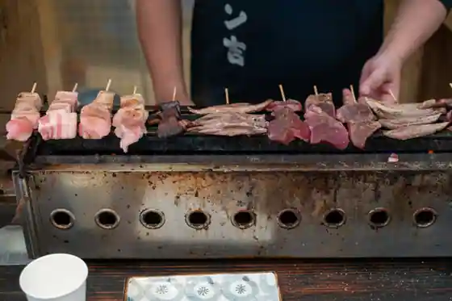
Kushiyaki Pon Kichi
おもや
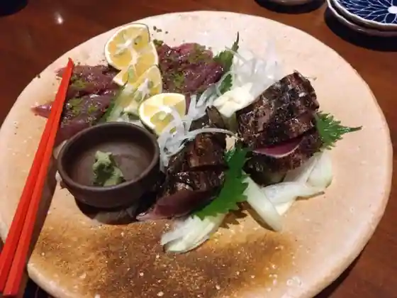
Omoya
ライダーズイン中土佐
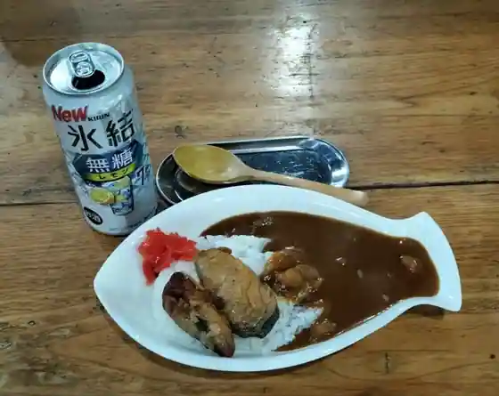
Raidazuin Nakatosa
源ちゃん
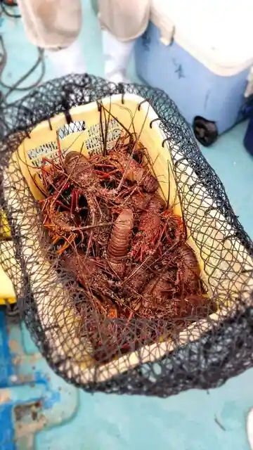
Gen Chan
彩翔
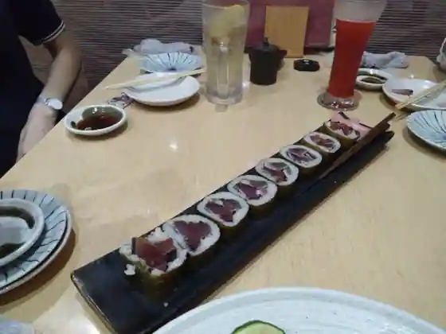
Sai Sho
讃岐
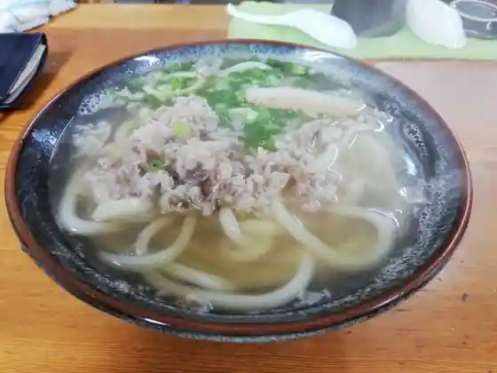
Sanuki
Sights
So Mei Shima
Nakatosa Town Hall
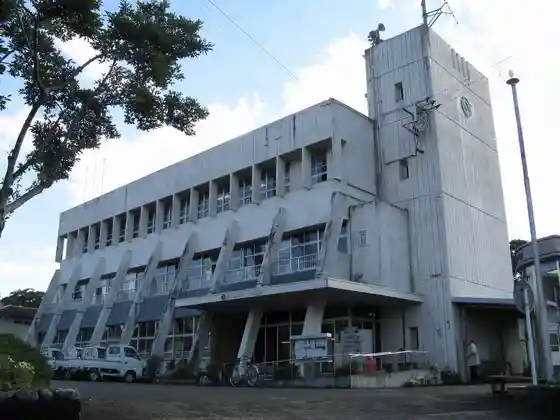
Kure Taisho Town Market
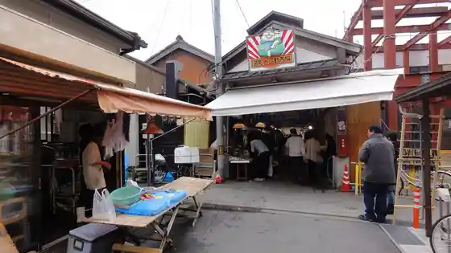
Roadside Station Nakatosa
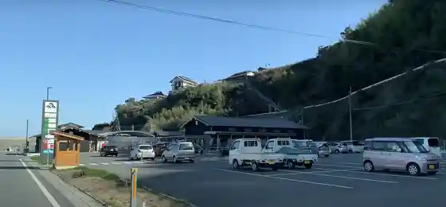
Nakatosa Ritsu Art Museum
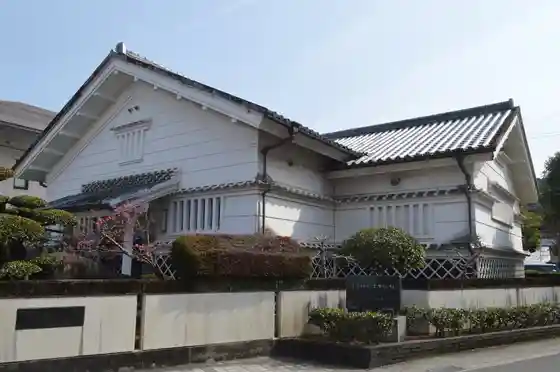
Kure Hachiman Shrine
Kure Wan